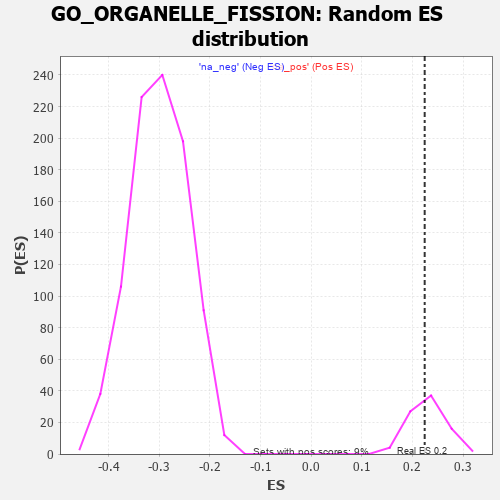

| | | Dataset | 7d |
| Phenotype | NoPhenotypeAvailable |
| Upregulated in class | na_pos |
| GeneSet | GO_ORGANELLE_FISSION |
| Enrichment Score (ES) | 0.22427298 |
| Normalized Enrichment Score (NES) | 0.9720909 |
| Nominal p-value | 0.54651165 |
| FDR q-value | 0.76100254 |
| FWER p-Value | 1.0 |
Table: GSEA Results Summary
 Fig 1: Enrichment plot: GO_ORGANELLE_FISSION
Fig 1: Enrichment plot: GO_ORGANELLE_FISSION
Profile of the Running ES Score & Positions of GeneSet Members on the Rank Ordered List
| PROBE | GENE SYMBOL | GENE_TITLE | RANK IN GENE LIST | RANK METRIC SCORE | RUNNING ES | CORE ENRICHMENT | | 1 | SPO11 | | | 35 | 3.371 | 0.0532 | Yes |
| 2 | TEX14 | | | 164 | 1.179 | 0.0570 | Yes |
| 3 | BUB3 | | | 172 | 1.143 | 0.0757 | Yes |
| 4 | SPDYA | | | 211 | 1.026 | 0.0883 | Yes |
| 5 | WEE2 | | | 333 | 0.766 | 0.0860 | Yes |
| 6 | MLH1 | | | 423 | 0.679 | 0.0863 | Yes |
| 7 | CENPS | | | 439 | 0.666 | 0.0957 | Yes |
| 8 | CDC20 | | | 480 | 0.644 | 0.1017 | Yes |
| 9 | MND1 | | | 492 | 0.633 | 0.1111 | Yes |
| 10 | KIF23 | | | 522 | 0.622 | 0.1180 | Yes |
| 11 | MSH5 | | | 554 | 0.612 | 0.1245 | Yes |
| 12 | HIRA | | | 568 | 0.608 | 0.1332 | Yes |
| 13 | MX1 | | | 578 | 0.604 | 0.1424 | Yes |
| 14 | CCNB1 | | | 581 | 0.601 | 0.1524 | Yes |
| 15 | NDC80 | | | 616 | 0.590 | 0.1582 | Yes |
| 16 | AURKC | | | 633 | 0.583 | 0.1661 | Yes |
| 17 | SMC2 | | | 667 | 0.570 | 0.1716 | Yes |
| 18 | MRE11 | | | 693 | 0.560 | 0.1780 | Yes |
| 19 | CDC6 | | | 709 | 0.557 | 0.1857 | Yes |
| 20 | TDRD9 | | | 761 | 0.542 | 0.1884 | Yes |
| 21 | RAD21 | | | 779 | 0.538 | 0.1954 | Yes |
| 22 | RMI1 | | | 886 | 0.509 | 0.1906 | Yes |
| 23 | POGZ | | | 887 | 0.509 | 0.1993 | Yes |
| 24 | COX10 | | | 990 | 0.485 | 0.1946 | Yes |
| 25 | PSMG2 | | | 1018 | 0.480 | 0.1994 | Yes |
| 26 | REC8 | | | 1028 | 0.478 | 0.2064 | Yes |
| 27 | RCC1 | | | 1043 | 0.475 | 0.2127 | Yes |
| 28 | STAG2 | | | 1069 | 0.470 | 0.2176 | Yes |
| 29 | RAD51 | | | 1090 | 0.466 | 0.2230 | Yes |
| 30 | CKS2 | | | 1165 | 0.452 | 0.2213 | Yes |
| 31 | UBR2 | | | 1334 | 0.423 | 0.2071 | Yes |
| 32 | PDS5B | | | 1432 | 0.403 | 0.2016 | Yes |
| 33 | CHMP7 | | | 1435 | 0.403 | 0.2082 | Yes |
| 34 | DDX4 | | | 1436 | 0.403 | 0.2151 | Yes |
| 35 | DDHD2 | | | 1557 | 0.381 | 0.2063 | Yes |
| 36 | CDC27 | | | 1585 | 0.377 | 0.2093 | Yes |
| 37 | BIRC8 | | | 1615 | 0.372 | 0.2120 | Yes |
| 38 | DRG1 | | | 1633 | 0.368 | 0.2161 | Yes |
| 39 | TPX2 | | | 1708 | 0.355 | 0.2127 | Yes |
| 40 | ESPL1 | | | 1734 | 0.349 | 0.2155 | Yes |
| 41 | WAPL | | | 1758 | 0.344 | 0.2185 | Yes |
| 42 | LRP5 | | | 1769 | 0.342 | 0.2230 | Yes |
| 43 | TDRKH | | | 1836 | 0.331 | 0.2203 | Yes |
| 44 | NUP62 | | | 1871 | 0.324 | 0.2215 | Yes |
| 45 | CUL3 | | | 1893 | 0.321 | 0.2243 | Yes |
| 46 | ZW10 | | | 1973 | 0.309 | 0.2195 | No |
| 47 | CENPE | | | 2086 | 0.293 | 0.2102 | No |
| 48 | BMP7 | | | 2107 | 0.290 | 0.2126 | No |
| 49 | INO80 | | | 2120 | 0.288 | 0.2160 | No |
| 50 | CDT1 | | | 2505 | 0.226 | 0.1709 | No |
| 51 | RAD1 | | | 2528 | 0.223 | 0.1719 | No |
| 52 | VPS4A | | | 2654 | 0.205 | 0.1594 | No |
| 53 | MUS81 | | | 2673 | 0.202 | 0.1606 | No |
| 54 | MARF1 | | | 2704 | 0.198 | 0.1602 | No |
| 55 | PHB2 | | | 2712 | 0.197 | 0.1626 | No |
| 56 | RIOK2 | | | 2775 | 0.187 | 0.1579 | No |
| 57 | BECN1 | | | 2828 | 0.179 | 0.1544 | No |
| 58 | DAPK3 | | | 2880 | 0.169 | 0.1507 | No |
| 59 | CDK13 | | | 2944 | 0.158 | 0.1454 | No |
| 60 | KIF4B | | | 2965 | 0.155 | 0.1455 | No |
| 61 | UBE2S | | | 2980 | 0.153 | 0.1463 | No |
| 62 | WNT4 | | | 3023 | 0.146 | 0.1435 | No |
| 63 | BRCA2 | | | 3024 | 0.146 | 0.1460 | No |
| 64 | BRDT | | | 3028 | 0.145 | 0.1481 | No |
| 65 | FZR1 | | | 3205 | 0.122 | 0.1277 | No |
| 66 | EME1 | | | 3246 | 0.114 | 0.1245 | No |
| 67 | CTDP1 | | | 3279 | 0.109 | 0.1223 | No |
| 68 | ASZ1 | | | 3299 | 0.106 | 0.1217 | No |
| 69 | PIN1 | | | 3543 | 0.069 | 0.0919 | No |
| 70 | DMRT1 | | | 3546 | 0.068 | 0.0928 | No |
| 71 | LCMT1 | | | 3576 | 0.063 | 0.0902 | No |
| 72 | FIS1 | | | 3654 | 0.051 | 0.0812 | No |
| 73 | SMC3 | | | 3701 | 0.042 | 0.0761 | No |
| 74 | HSF1 | | | 3718 | 0.039 | 0.0747 | No |
| 75 | CDC16 | | | 3724 | 0.038 | 0.0747 | No |
| 76 | SPAST | | | 3801 | 0.027 | 0.0655 | No |
| 77 | PRC1 | | | 3841 | 0.021 | 0.0609 | No |
| 78 | NEK2 | | | 3871 | 0.016 | 0.0574 | No |
| 79 | NIPBL | | | 3900 | 0.010 | 0.0541 | No |
| 80 | TOP2B | | | 3938 | 0.005 | 0.0494 | No |
| 81 | CHMP6 | | | 3977 | -0.003 | 0.0446 | No |
| 82 | VPS35 | | | 3989 | -0.006 | 0.0433 | No |
| 83 | MZT1 | | | 4145 | -0.032 | 0.0241 | No |
| 84 | MSH4 | | | 4176 | -0.038 | 0.0209 | No |
| 85 | RRS1 | | | 4256 | -0.051 | 0.0117 | No |
| 86 | PCID2 | | | 4258 | -0.051 | 0.0125 | No |
| 87 | RAN | | | 4299 | -0.059 | 0.0084 | No |
| 88 | OPA1 | | | 4330 | -0.065 | 0.0057 | No |
| 89 | KIF3B | | | 4450 | -0.085 | -0.0081 | No |
| 90 | LRRK2 | | | 4467 | -0.087 | -0.0086 | No |
| 91 | EPS8 | | | 4474 | -0.088 | -0.0079 | No |
| 92 | PINX1 | | | 4515 | -0.097 | -0.0113 | No |
| 93 | APC | | | 4558 | -0.107 | -0.0148 | No |
| 94 | BAG6 | | | 4563 | -0.108 | -0.0135 | No |
| 95 | SMC1A | | | 4609 | -0.120 | -0.0172 | No |
| 96 | CEP97 | | | 4812 | -0.160 | -0.0402 | No |
| 97 | SMC4 | | | 4916 | -0.180 | -0.0503 | No |
| 98 | ATRX | | | 4929 | -0.184 | -0.0486 | No |
| 99 | CHMP5 | | | 4952 | -0.188 | -0.0482 | No |
| 100 | DCTN2 | | | 5175 | -0.243 | -0.0724 | No |
| 101 | ATM | | | 5210 | -0.249 | -0.0725 | No |
| 102 | TOP2A | | | 5216 | -0.250 | -0.0688 | No |
| 103 | RAD50 | | | 5314 | -0.276 | -0.0765 | No |
| 104 | ACOT8 | | | 5364 | -0.288 | -0.0778 | No |
| 105 | KIF2A | | | 5511 | -0.322 | -0.0909 | No |
| 106 | SPHK1 | | | 5576 | -0.339 | -0.0933 | No |
| 107 | NDE1 | | | 5578 | -0.339 | -0.0876 | No |
| 108 | ASPM | | | 5637 | -0.358 | -0.0889 | No |
| 109 | MEIOB | | | 5667 | -0.366 | -0.0864 | No |
| 110 | MX2 | | | 5745 | -0.390 | -0.0895 | No |
| 111 | CDC23 | | | 5756 | -0.394 | -0.0841 | No |
| 112 | FANCM | | | 5824 | -0.413 | -0.0855 | No |
| 113 | SH2B1 | | | 5963 | -0.459 | -0.0953 | No |
| 114 | CALR | | | 6077 | -0.499 | -0.1012 | No |
| 115 | PLK1 | | | 6082 | -0.500 | -0.0931 | No |
| 116 | UBB | | | 6090 | -0.503 | -0.0854 | No |
| 117 | TNKS | | | 6138 | -0.516 | -0.0826 | No |
| 118 | INSR | | | 6204 | -0.538 | -0.0817 | No |
| 119 | CDC42 | | | 6236 | -0.548 | -0.0763 | No |
| 120 | BOD1 | | | 6320 | -0.583 | -0.0769 | No |
| 121 | M1AP | | | 6537 | -0.680 | -0.0928 | No |
| 122 | PEX19 | | | 6569 | -0.693 | -0.0849 | No |
| 123 | TPR | | | 6597 | -0.709 | -0.0763 | No |
| 124 | HFM1 | | | 6879 | -0.855 | -0.0975 | No |
| 125 | DNM1L | | | 6963 | -0.913 | -0.0925 | No |
| 126 | PIBF1 | | | 7049 | -0.966 | -0.0868 | No |
| 127 | SYCP1 | | | 7295 | -1.167 | -0.0981 | No |
| 128 | MSX2 | | | 7299 | -1.171 | -0.0784 | No |
| 129 | DDHD1 | | | 7501 | -1.397 | -0.0802 | No |
| 130 | MCU | | | 7644 | -1.637 | -0.0703 | No |
| 131 | PLCB1 | | | 7904 | -2.841 | -0.0548 | No |
| 132 | XIAP | | | 7947 | -3.696 | 0.0031 | No |
Table: GSEA details [plain text format]

Fig 2: GO_ORGANELLE_FISSION: Random ES distribution
Gene set null distribution of ES for GO_ORGANELLE_FISSION